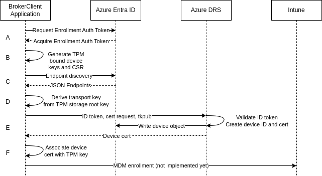
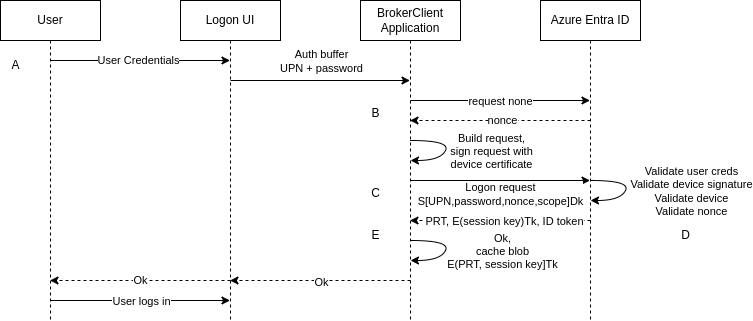

Design Principles
Adherence to Microsoft Specifications and Windows Behavior
While the project aims to align with Microsoft specifications where feasible, our primary guiding principle is adherence to actual Windows behavior. This approach ensures compatibility and interoperability within Microsoft's authentication ecosystem while accommodating any deviations or inaccuracies found in the specifications.
Interaction Diagrams
Since we try to adhere to Windows behavior, it's helpful to review Microsoft design flows which explain those behaviors, such as How it works: Device registration and Primary Refresh Token Issuance. These flows are similar to the behavior of this project, but project specific design flows are provided here for clarity.
Device Enrollment

A: Enrollment is first initiated by authenticating to the
https://enrollment.manage.microsoft.com resource. This is accomplished using the
functions acquire_token_by_username_password_for_device_enrollment(),
initiate_device_flow_for_device_enrollment() paired with
acquire_token_by_device_flow(), or
initiate_acquire_token_by_mfa_flow_for_device_enrollment() paired with
acquire_token_by_mfa_flow(). The UserToken from the response is then
provided in a call to enroll_device().
B: The enroll_device() function communicates with the TPM and creates 2
RSA keys. One will be used as the transport key, and the other will be used
to create a Certificate Signing Request (CSR). The source for this request is
found in src/auth.rs within the BrokerClientApplication struct
implementation.
C: enroll_device() sends a GET request to
https://enterpriseregistration.windows.net requesting a list of available
services. This request is defined in
[MS-DRS] Section 3.1
and [MS-DVRD] Section 4.3.
The source for this request is found in src/discovery.rs.
D: The enroll_device_internal() function processes the public transport
key by generating a
BCRYPT_RSAKEY_BLOB,
which is then encoded in base64 format.
E: The encoded transport key blob is subsequently included in the enrollment
request payload, along with the Certificate Signing Request (CSR), which is also
base64 encoded. These, included with the enrollment attributes passed to
enroll_device(), are sent to the Azure DRS service for enrollment. The DRS
service validates the access token received in A, creates a device id, then
generates and signs a device certificate as requested. The device certificate
is returned to the client.
F: The device certificate is associated with the transport key in the TPM.
MDM enrollment via Intune was implemented in Himmelblau 1.0.
PRT Issuance via Username/Password

A: The logon UI passes the UPN and password to
acquire_user_prt_by_username_password().
B: build_jwt_by_username_password() gets a nonce from Microsoft Entra ID.
C: build_jwt_by_username_password() constructs the authentication request
with the user’s credentials, nonce, and a scope, and signs the request with the
Device key. acquire_user_prt_jwt() sends the request to Microsoft Entra ID.
D: Microsoft Entra ID validates the user credentials, the nonce, and device
signature, verifies that the device is valid in the tenant and issues the
encrypted PRT. Along with the PRT, Microsoft Entra ID also issues a symmetric
key, called the Session key encrypted by Microsoft Entra ID using the Transport
key. In addition, the Session key is also embedded in the PRT. This Session key
acts as the Proof-of-possession (PoP) key for subsequent requests with the PRT.
Up to two Kerberos TGTs are embeded in the PRT, labeled tgt_ad and
tgt_cloud. The first is an on-prem TGT (if configured), while the second is an
Azure cloud TGT.
E: acquire_user_prt_by_username_password() encrypts the PRT using the
Transport key and returns the encrypted blob. exchange_prt_for_access_token()
can then be called to obtain an access token for the user.